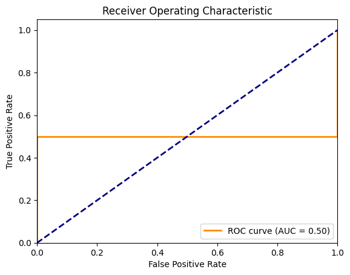

import TopDownHockey_Scraper.TopDownHockey_NHL_Scraper as tdhnhlscrape
import TopDownHockey_Scraper.TopDownHockey_EliteProspects_Scraper as tdhepscrape
from nhlpy import NHLClientSTAT468 Final Project
CHAPTER 1: IMPORT
The first step in our project is to import the necessary libraries and data:
import pandas as pd
from datetime import date
import statsmodels.api as sm
import numpy as np
from sklearn.linear_model import LogisticRegressionWe will create a toggle to see if we want to rescrape the data or just import the prior scrape from an existing file. If scrape is set to True, we will scrape the data; otherwise, we will read from the existing file.
scrape = True
#This will be the file name where data is stored in our git repo
filename = "regression_input.xlsx"First, we loop through a bunch of seasons and scrape player OHL stats and builds. Not that we get rid of player positions so that we can join with player builds using names as index. While this is mixing some of steps 2&3 (Tidy&Transform), it’s easier to do it here since we want to get the player builds at the time of the draft, and it would be confusing to do the join later on, when we’re outside the loop and the stats&builds may not correspond to one another since they could be from seperate years.
#Get OHL Player Data (stats, build, etc)
if scrape == True:
#Can't include all years because of backend data issues in some years
#years = ["2004-2005", "2006-2007", "2007-2008", "2008-2009", "2009-2010", "2010-2011", "2011-2012", "2012-2013", "2013-2014",
# "2014-2015", "2015-2016", "2016-2017", "2017-2018", "2018-2019"]
years = ["2016-2017", "2013-2014"]
aggregated_output = pd.DataFrame()
for year in years:
df = tdhepscrape.get_skaters(("ohl"), (year))[0:50]
#GET PLAYER INFO
info = tdhepscrape.get_player_information(df)
#GET RID OF PLAYER POSITIONS FROM NAMES
df['player'] = df['player'].str.replace(r'\s*\([^)]*\)', '', regex=True)
#ADD YEAR TO DF
df.insert(0, "year", year)
#JOIN PLAYER BIO WITH STATS
year_output = pd.merge(df[["year", "player", "gp", "g", "a", "tp"]], info[["player", "dob", "height", "weight", "shoots"]], on='player', how='inner')
#ADD CURRENT YEAR PROSPECTS TO AGGREGATED DF
aggregated_output = pd.concat([aggregated_output, year_output])Your scrape request is skater data from the following league:
ohl
In the following season:
2016-2017
Beginning scrape of ohl skater data from 2016-2017.--------------------------------------------------------------------------- KeyboardInterrupt Traceback (most recent call last) Cell In[121], line 13 10 aggregated_output = pd.DataFrame() 12 for year in years: ---> 13 df = tdhepscrape.get_skaters(("ohl"), (year))[0:50] 15 #GET PLAYER INFO 16 info = tdhepscrape.get_player_information(df) File ~/Downloads/STAT468/STAT468 Final/venv/lib/python3.13/site-packages/TopDownHockey_Scraper/TopDownHockey_EliteProspects_Scraper.py:682, in get_skaters(leagues, seasons) 680 print("In the following season:") 681 print(season_string) --> 682 leaguesall = get_league_skater_boxcars(leagues, seasons) 683 print("Completed scraping skater data from the following league:") 684 print(str(leagues)) File ~/Downloads/STAT468/STAT468 Final/venv/lib/python3.13/site-packages/TopDownHockey_Scraper/TopDownHockey_EliteProspects_Scraper.py:430, in get_league_skater_boxcars(league, seasons) 427 output = pd.DataFrame() 429 if type(seasons) == str: --> 430 single = getskaters(league, seasons) 431 output = output._append(single) 432 print("Scraping " + league + " data is complete. You scraped skater data from " + seasons + ".") File ~/Downloads/STAT468/STAT468 Final/venv/lib/python3.13/site-packages/TopDownHockey_Scraper/TopDownHockey_EliteProspects_Scraper.py:69, in getskaters(league, year) 66 else: 68 for i in range(1,99): ---> 69 page = requests.get(url+str(i), timeout = 500) 70 page_string = str(page) 72 while page_string == '<Response [403]>': File ~/Downloads/STAT468/STAT468 Final/venv/lib/python3.13/site-packages/requests/api.py:73, in get(url, params, **kwargs) 62 def get(url, params=None, **kwargs): 63 r"""Sends a GET request. 64 65 :param url: URL for the new :class:`Request` object. (...) 70 :rtype: requests.Response 71 """ ---> 73 return request("get", url, params=params, **kwargs) File ~/Downloads/STAT468/STAT468 Final/venv/lib/python3.13/site-packages/requests/api.py:59, in request(method, url, **kwargs) 55 # By using the 'with' statement we are sure the session is closed, thus we 56 # avoid leaving sockets open which can trigger a ResourceWarning in some 57 # cases, and look like a memory leak in others. 58 with sessions.Session() as session: ---> 59 return session.request(method=method, url=url, **kwargs) File ~/Downloads/STAT468/STAT468 Final/venv/lib/python3.13/site-packages/requests/sessions.py:589, in Session.request(self, method, url, params, data, headers, cookies, files, auth, timeout, allow_redirects, proxies, hooks, stream, verify, cert, json) 584 send_kwargs = { 585 "timeout": timeout, 586 "allow_redirects": allow_redirects, 587 } 588 send_kwargs.update(settings) --> 589 resp = self.send(prep, **send_kwargs) 591 return resp File ~/Downloads/STAT468/STAT468 Final/venv/lib/python3.13/site-packages/requests/sessions.py:703, in Session.send(self, request, **kwargs) 700 start = preferred_clock() 702 # Send the request --> 703 r = adapter.send(request, **kwargs) 705 # Total elapsed time of the request (approximately) 706 elapsed = preferred_clock() - start File ~/Downloads/STAT468/STAT468 Final/venv/lib/python3.13/site-packages/requests/adapters.py:667, in HTTPAdapter.send(self, request, stream, timeout, verify, cert, proxies) 664 timeout = TimeoutSauce(connect=timeout, read=timeout) 666 try: --> 667 resp = conn.urlopen( 668 method=request.method, 669 url=url, 670 body=request.body, 671 headers=request.headers, 672 redirect=False, 673 assert_same_host=False, 674 preload_content=False, 675 decode_content=False, 676 retries=self.max_retries, 677 timeout=timeout, 678 chunked=chunked, 679 ) 681 except (ProtocolError, OSError) as err: 682 raise ConnectionError(err, request=request) File ~/Downloads/STAT468/STAT468 Final/venv/lib/python3.13/site-packages/urllib3/connectionpool.py:787, in HTTPConnectionPool.urlopen(self, method, url, body, headers, retries, redirect, assert_same_host, timeout, pool_timeout, release_conn, chunked, body_pos, preload_content, decode_content, **response_kw) 784 response_conn = conn if not release_conn else None 786 # Make the request on the HTTPConnection object --> 787 response = self._make_request( 788 conn, 789 method, 790 url, 791 timeout=timeout_obj, 792 body=body, 793 headers=headers, 794 chunked=chunked, 795 retries=retries, 796 response_conn=response_conn, 797 preload_content=preload_content, 798 decode_content=decode_content, 799 **response_kw, 800 ) 802 # Everything went great! 803 clean_exit = True File ~/Downloads/STAT468/STAT468 Final/venv/lib/python3.13/site-packages/urllib3/connectionpool.py:534, in HTTPConnectionPool._make_request(self, conn, method, url, body, headers, retries, timeout, chunked, response_conn, preload_content, decode_content, enforce_content_length) 532 # Receive the response from the server 533 try: --> 534 response = conn.getresponse() 535 except (BaseSSLError, OSError) as e: 536 self._raise_timeout(err=e, url=url, timeout_value=read_timeout) File ~/Downloads/STAT468/STAT468 Final/venv/lib/python3.13/site-packages/urllib3/connection.py:565, in HTTPConnection.getresponse(self) 562 _shutdown = getattr(self.sock, "shutdown", None) 564 # Get the response from http.client.HTTPConnection --> 565 httplib_response = super().getresponse() 567 try: 568 assert_header_parsing(httplib_response.msg) File /Library/Frameworks/Python.framework/Versions/3.13/lib/python3.13/http/client.py:1430, in HTTPConnection.getresponse(self) 1428 try: 1429 try: -> 1430 response.begin() 1431 except ConnectionError: 1432 self.close() File /Library/Frameworks/Python.framework/Versions/3.13/lib/python3.13/http/client.py:331, in HTTPResponse.begin(self) 329 # read until we get a non-100 response 330 while True: --> 331 version, status, reason = self._read_status() 332 if status != CONTINUE: 333 break File /Library/Frameworks/Python.framework/Versions/3.13/lib/python3.13/http/client.py:292, in HTTPResponse._read_status(self) 291 def _read_status(self): --> 292 line = str(self.fp.readline(_MAXLINE + 1), "iso-8859-1") 293 if len(line) > _MAXLINE: 294 raise LineTooLong("status line") File /Library/Frameworks/Python.framework/Versions/3.13/lib/python3.13/socket.py:719, in SocketIO.readinto(self, b) 717 raise OSError("cannot read from timed out object") 718 try: --> 719 return self._sock.recv_into(b) 720 except timeout: 721 self._timeout_occurred = True File /Library/Frameworks/Python.framework/Versions/3.13/lib/python3.13/ssl.py:1304, in SSLSocket.recv_into(self, buffer, nbytes, flags) 1300 if flags != 0: 1301 raise ValueError( 1302 "non-zero flags not allowed in calls to recv_into() on %s" % 1303 self.__class__) -> 1304 return self.read(nbytes, buffer) 1305 else: 1306 return super().recv_into(buffer, nbytes, flags) File /Library/Frameworks/Python.framework/Versions/3.13/lib/python3.13/ssl.py:1138, in SSLSocket.read(self, len, buffer) 1136 try: 1137 if buffer is not None: -> 1138 return self._sslobj.read(len, buffer) 1139 else: 1140 return self._sslobj.read(len) KeyboardInterrupt:
Next, we print the draftyears of all NHL players drafted between 2005 and 2020
if scrape == True:
years = list(range(2005, 2021))
draftyears = pd.DataFrame()
for year in years:
df_list = pd.read_html(f"https://www.hockey-reference.com/draft/NHL_{year}_entry.html", match="Round")
players_drafted = df_list[0]
players_drafted
#Let's get rid of the top header that isnt really used
players_drafted.columns = players_drafted.columns.get_level_values(1)
players_drafted["draft_year"] = year
players_drafted = players_drafted[["draft_year", "Player"]]
players_drafted =players_drafted.rename(columns={"draft_year": "player_draft_year", "Player": "player"})
draftyears = pd.concat([draftyears, players_drafted])
print(draftyears) player_draft_year player
0 2005 Sidney Crosby
1 2005 Bobby Ryan
2 2005 Jack Johnson
3 2005 Benoit Pouliot
4 2005 Carey Price
.. ... ...
223 2020 Ryan Tverberg
224 2020 Henrik Tikkanen
225 2020 Maxim Marushev
226 2020 Jakub Konecny
227 2020 Declan McDonnell
[3609 rows x 2 columns]Finally, we get the games played for all NHL players to have played at least 1 game in the NHL. We will use this to calculate the probability of a player playing more than 200 games in the NHL.
#Getting games played for all NHL players
if scrape == True:
nhl_gp = pd.DataFrame()
pages = list(range(1, 80))
for page in pages:
df_list = pd.read_html(f"https://www.eliteprospects.com/league/nhl/stats/all-time?page={page}")
page_stats = df_list[2]
page_stats = page_stats[["Player", "GP"]]
nhl_gp = pd.concat([nhl_gp, page_stats])
nhl_gp = nhl_gp.rename(columns={"Player": "player", "GP": "nhl_gp"})
#GET RID OF PLAYER POSITIONS FROM NAMES
nhl_gp['player'] = nhl_gp['player'].str.replace(r'\s*\([^)]*\)', '', regex=True)
# Replacing NA and "-" values with 0
nhl_gp["nhl_gp"] = nhl_gp["nhl_gp"].fillna(0)
nhl_gp["nhl_gp"] = nhl_gp["nhl_gp"].replace("-", 0)
nhl_gpCHAPTER 2: TIDY
We first get rid of defencemen from our dataset, since we are only concerned with forwards.
if scrape == True:
aggregated_output = aggregated_output[~aggregated_output['player'].str.contains(r'\(([^)]*D[^)]*)\)', regex=True)]Next, we change the type of some columns - they are objects by default, we need them to be integeres to regress on them later on. We also replace “-” values with 0 for regression purposes, since “-” means that the player did not play in that season, and we want to treat that as 0 games played.
if scrape == True:
aggregated_output["gp"] = aggregated_output["gp"].replace("-", 0)
aggregated_output["gp"] = aggregated_output["gp"].astype(int)
aggregated_output["g"] = aggregated_output["g"].replace("-", 0)
aggregated_output["g"] = aggregated_output["g"].astype(int)
aggregated_output["a"] = aggregated_output["a"].replace("-", 0)
aggregated_output["a"] = aggregated_output["a"].astype(int)
aggregated_output["tp"] = aggregated_output["tp"].replace("-", 0)
aggregated_output["tp"] = aggregated_output["tp"].astype(int)Get corresponding draft year for each row in the dataset (oe. season 2024-2025 would have a draft year of 2025).
Note this isn’t necessarily the players’ draft year - it’s just the draft year for the corresponding row’s season. We will use this to only keep rows where the draft year is the same as the player’s actual draft year.
if scrape == True:
aggregated_output["draft_year"] = aggregated_output["year"].str[5:]
aggregated_output["draft_year"] = aggregated_output["draft_year"].astype(int)
aggregated_outputJoin games played and draft year onto each row of the OHL player data dataset.
#Join GP, draft year onto OHL player data
if scrape == True:
#MAKE ALL PLAYER NAMES UPPERCASE (TO MAKE JOINING TABLES NON CASE SENSITIVE)
aggregated_output['player'] = aggregated_output['player'].str.upper()
draftyears['player'] = draftyears['player'].str.upper()
nhl_gp['player'] = nhl_gp['player'].str.upper()
#Filter ohl stats for only drafted players' draft year stats -
#This will get rid of a) undrafted players, and b) drafted players non-draft year stats
df = pd.merge(aggregated_output, draftyears, left_on=['player', 'draft_year'], right_on=['player', 'player_draft_year'], how='inner')
#Can get rid of one of the draft year columns - don't need both
df = df[["year", "player", "gp", "g", "a", "tp", "dob", "height", "weight", "shoots", 'draft_year']]
#Join players' games played - if player gp not found, assume it to be 0.
df = pd.merge(df, nhl_gp, left_on=['player'], right_on=['player'], how='left')
df["nhl_gp"] = df["nhl_gp"].fillna(0)
df["nhl_gp"] = df["nhl_gp"].astype(int)
df.to_excel(filename, index=False)Finally, some miscallaneous tidying. Refer to comments for more information.
df = pd.read_excel(filename)
#Changing the weight to a numerical variate in kg
df["weight_kg"] = df["weight"].apply(lambda x: x[:x.find(" ")])
df["weight_kg"] = df["weight_kg"].astype(int)
df.dtypes
#Can get rid of intermediate columns
df = df.drop(["weight"], axis = 1)
#Renaming height column to height_cm for clarity
df = df.rename(columns = {"height": "height_cm"})
df| year | player | gp | g | a | tp | dob | height_cm | shoots | draft_year | nhl_gp | weight_kg | |
|---|---|---|---|---|---|---|---|---|---|---|---|---|
| 0 | 2016-2017 | PETRUS PALMU | 62 | 40 | 58 | 98 | 1997-07-16 | 168 | L | 2017 | 0 | 78 |
| 1 | 2016-2017 | NICK SUZUKI | 65 | 45 | 51 | 96 | 1999-08-10 | 180 | R | 2017 | 455 | 94 |
| 2 | 2016-2017 | JASON ROBERTSON | 68 | 42 | 39 | 81 | 1999-07-22 | 191 | L | 2017 | 374 | 91 |
| 3 | 2016-2017 | OWEN TIPPETT | 60 | 44 | 31 | 75 | 1999-02-16 | 185 | R | 2017 | 347 | 95 |
| 4 | 2016-2017 | JONAH GADJOVICH | 60 | 46 | 28 | 74 | 1998-10-12 | 191 | L | 2017 | 160 | 96 |
| 5 | 2016-2017 | ROBERT THOMAS | 66 | 16 | 50 | 66 | 1999-07-02 | 183 | R | 2017 | 466 | 85 |
| 6 | 2016-2017 | DRAKE RYMSHA | 65 | 35 | 27 | 62 | 1998-08-06 | 183 | R | 2017 | 1 | 91 |
| 7 | 2016-2017 | MATTHEW STROME | 66 | 34 | 28 | 62 | 1999-01-06 | 193 | L | 2017 | 0 | 93 |
| 8 | 2016-2017 | MORGAN FROST | 67 | 20 | 42 | 62 | 1999-05-14 | 182 | L | 2017 | 310 | 87 |
| 9 | 2016-2017 | GABRIEL VILARDI | 49 | 29 | 32 | 61 | 1999-08-16 | 191 | R | 2017 | 270 | 98 |
| 10 | 2016-2017 | CONOR TIMMINS | 67 | 7 | 54 | 61 | 1998-09-18 | 188 | R | 2017 | 159 | 97 |
| 11 | 2013-2014 | MICHAEL DAL COLLE | 67 | 39 | 56 | 95 | 1996-06-20 | 191 | L | 2014 | 112 | 88 |
| 12 | 2013-2014 | BRENDAN PERLINI | 58 | 34 | 37 | 71 | 1996-04-27 | 192 | L | 2014 | 262 | 96 |
| 13 | 2013-2014 | SPENCER WATSON | 65 | 33 | 35 | 68 | 1996-04-25 | 178 | R | 2014 | 0 | 77 |
| 14 | 2013-2014 | JARED MCCANN | 64 | 27 | 35 | 62 | 1996-05-31 | 185 | L | 2014 | 668 | 84 |
| 15 | 2013-2014 | ERIC CORNEL | 68 | 25 | 37 | 62 | 1996-04-11 | 188 | R | 2014 | 0 | 90 |
STEP 3: TRANSFORM
Creating some new stats (age at draft, goals per game, points per game, and an indicator variable for whether the player has played at least 200 NHL games). These will all be used in the regression later on.
#Getting the age of the player at the time of draft (for simplicity, we will assume draft to be on June 30 for all years)
df["draft_date"] = df["draft_year"].astype(str) + '-06-30'
df["draft_date"] = pd.to_datetime(df["draft_date"])
df["dob"] = pd.to_datetime(df["dob"])
df["age_days"] = (df["draft_date"] - df["dob"])
df["age_days"] = df["age_days"].dt.days
#Can get rid of intermediate columns
df = df.drop(["draft_date", "draft_year", "dob"], axis = 1)
#Adding columns for goals/g and points/g
df["gpg"] = df["g"] / df["gp"]
df["ppg"] = df["tp"] / df["gp"]
#Create indicator variable to measure if the player has played at least 200 nhl games
df["Pr[GP > 200]"] = df["nhl_gp"] >= 200
df["Pr[GP > 200]"] = df["Pr[GP > 200]"].astype(int)
df| year | player | gp | g | a | tp | height_cm | shoots | nhl_gp | weight_kg | age_days | gpg | ppg | Pr[GP > 200] | |
|---|---|---|---|---|---|---|---|---|---|---|---|---|---|---|
| 0 | 2016-2017 | PETRUS PALMU | 62 | 40 | 58 | 98 | 168 | L | 0 | 78 | 7289 | 0.645161 | 1.580645 | 0 |
| 1 | 2016-2017 | NICK SUZUKI | 65 | 45 | 51 | 96 | 180 | R | 455 | 94 | 6534 | 0.692308 | 1.476923 | 1 |
| 2 | 2016-2017 | JASON ROBERTSON | 68 | 42 | 39 | 81 | 191 | L | 374 | 91 | 6553 | 0.617647 | 1.191176 | 1 |
| 3 | 2016-2017 | OWEN TIPPETT | 60 | 44 | 31 | 75 | 185 | R | 347 | 95 | 6709 | 0.733333 | 1.250000 | 1 |
| 4 | 2016-2017 | JONAH GADJOVICH | 60 | 46 | 28 | 74 | 191 | L | 160 | 96 | 6836 | 0.766667 | 1.233333 | 0 |
| 5 | 2016-2017 | ROBERT THOMAS | 66 | 16 | 50 | 66 | 183 | R | 466 | 85 | 6573 | 0.242424 | 1.000000 | 1 |
| 6 | 2016-2017 | DRAKE RYMSHA | 65 | 35 | 27 | 62 | 183 | R | 1 | 91 | 6903 | 0.538462 | 0.953846 | 0 |
| 7 | 2016-2017 | MATTHEW STROME | 66 | 34 | 28 | 62 | 193 | L | 0 | 93 | 6750 | 0.515152 | 0.939394 | 0 |
| 8 | 2016-2017 | MORGAN FROST | 67 | 20 | 42 | 62 | 182 | L | 310 | 87 | 6622 | 0.298507 | 0.925373 | 1 |
| 9 | 2016-2017 | GABRIEL VILARDI | 49 | 29 | 32 | 61 | 191 | R | 270 | 98 | 6528 | 0.591837 | 1.244898 | 1 |
| 10 | 2016-2017 | CONOR TIMMINS | 67 | 7 | 54 | 61 | 188 | R | 159 | 97 | 6860 | 0.104478 | 0.910448 | 0 |
| 11 | 2013-2014 | MICHAEL DAL COLLE | 67 | 39 | 56 | 95 | 191 | L | 112 | 88 | 6584 | 0.582090 | 1.417910 | 0 |
| 12 | 2013-2014 | BRENDAN PERLINI | 58 | 34 | 37 | 71 | 192 | L | 262 | 96 | 6638 | 0.586207 | 1.224138 | 1 |
| 13 | 2013-2014 | SPENCER WATSON | 65 | 33 | 35 | 68 | 178 | R | 0 | 77 | 6640 | 0.507692 | 1.046154 | 0 |
| 14 | 2013-2014 | JARED MCCANN | 64 | 27 | 35 | 62 | 185 | L | 668 | 84 | 6604 | 0.421875 | 0.968750 | 1 |
| 15 | 2013-2014 | ERIC CORNEL | 68 | 25 | 37 | 62 | 188 | R | 0 | 90 | 6654 | 0.367647 | 0.911765 | 0 |
STEP 4: VISUALIZE
STEP 5: MODEL
We are going to create a logistic regression model. Logsitic regression is used since we are regressing for a probability, which needs to be bounded between 0 and 1. The model will aim to predict the probability a player becoming an everyday NHL player (play 200 NHL games or more):
# X: predictors, y: binary response
df_regress = df[df["year"].isin(["2004-2005", "2006-2007", "2007-2008", "2008-2009", "2009-2010",
"2014-2015", "2015-2016", "2016-2017", "2017-2018", "2018-2019"])]
X = df_regress[['tp', 'height_cm', 'weight_kg', 'age_days', 'gpg', 'ppg']]
X = sm.add_constant(X) # adds intercept
y = df_regress['Pr[GP > 200]']
model = sm.Logit(y, X)
result = model.fit()
print(result.summary())Warning: Maximum number of iterations has been exceeded.
Current function value: 0.000000
Iterations: 35
Logit Regression Results
==============================================================================
Dep. Variable: Pr[GP > 200] No. Observations: 11
Model: Logit Df Residuals: 4
Method: MLE Df Model: 6
Date: Tue, 05 Aug 2025 Pseudo R-squ.: 1.000
Time: 00:39:50 Log-Likelihood: -3.9237e-09
converged: False LL-Null: -7.5791
Covariance Type: nonrobust LLR p-value: 0.01906
==============================================================================
coef std err z P>|z| [0.025 0.975]
------------------------------------------------------------------------------
const 3675.8803 nan nan nan nan nan
tp 2.2330 nan nan nan nan nan
height_cm -12.0059 6.89e+09 -1.74e-09 1.000 -1.35e+10 1.35e+10
weight_kg 11.1335 3.02e+09 3.68e-09 1.000 -5.92e+09 5.92e+09
age_days -0.3737 nan nan nan nan nan
gpg 33.7468 nan nan nan nan nan
ppg -104.6696 3.4e+10 -3.07e-09 1.000 -6.67e+10 6.67e+10
==============================================================================
Complete Separation: The results show that there iscomplete separation or perfect prediction.
In this case the Maximum Likelihood Estimator does not exist and the parameters
are not identified./Users/devakshah/Downloads/STAT468/STAT468 Final/venv/lib/python3.13/site-packages/statsmodels/discrete/discrete_model.py:227: PerfectSeparationWarning: Perfect separation or prediction detected, parameter may not be identified
warnings.warn(msg, category=PerfectSeparationWarning)
/Users/devakshah/Downloads/STAT468/STAT468 Final/venv/lib/python3.13/site-packages/statsmodels/discrete/discrete_model.py:227: PerfectSeparationWarning: Perfect separation or prediction detected, parameter may not be identified
warnings.warn(msg, category=PerfectSeparationWarning)
/Users/devakshah/Downloads/STAT468/STAT468 Final/venv/lib/python3.13/site-packages/statsmodels/discrete/discrete_model.py:227: PerfectSeparationWarning: Perfect separation or prediction detected, parameter may not be identified
warnings.warn(msg, category=PerfectSeparationWarning)
/Users/devakshah/Downloads/STAT468/STAT468 Final/venv/lib/python3.13/site-packages/statsmodels/discrete/discrete_model.py:227: PerfectSeparationWarning: Perfect separation or prediction detected, parameter may not be identified
warnings.warn(msg, category=PerfectSeparationWarning)
/Users/devakshah/Downloads/STAT468/STAT468 Final/venv/lib/python3.13/site-packages/statsmodels/discrete/discrete_model.py:227: PerfectSeparationWarning: Perfect separation or prediction detected, parameter may not be identified
warnings.warn(msg, category=PerfectSeparationWarning)
/Users/devakshah/Downloads/STAT468/STAT468 Final/venv/lib/python3.13/site-packages/statsmodels/discrete/discrete_model.py:227: PerfectSeparationWarning: Perfect separation or prediction detected, parameter may not be identified
warnings.warn(msg, category=PerfectSeparationWarning)
/Users/devakshah/Downloads/STAT468/STAT468 Final/venv/lib/python3.13/site-packages/statsmodels/base/model.py:607: ConvergenceWarning: Maximum Likelihood optimization failed to converge. Check mle_retvals
warnings.warn("Maximum Likelihood optimization failed to "The p-values tell us that …
STEP 6: COMMUNICATE
Let’s first look at if there is multicollinearity in our data:
print(X.corr()) const tp height_cm weight_kg age_days gpg ppg
const NaN NaN NaN NaN NaN NaN NaN
tp NaN 1.000000 -0.618148 -0.401491 0.292035 0.565618 0.895680
height_cm NaN -0.618148 1.000000 0.784210 -0.572902 -0.038544 -0.525288
weight_kg NaN -0.401491 0.784210 1.000000 -0.490385 0.117542 -0.232743
age_days NaN 0.292035 -0.572902 -0.490385 1.000000 0.086337 0.256884
gpg NaN 0.565618 -0.038544 0.117542 0.086337 1.000000 0.705083
ppg NaN 0.895680 -0.525288 -0.232743 0.256884 0.705083 1.000000Now, we will test out our model on a test set. We will use the model to predict the probability of a player becoming an everyday NHL player (playing 200 or more NHL games). We will do so on seasons we did not train our model on.
#Testing model out
df_test = df[df["year"].isin(["2010-2011", "2011-2012", "2012-2013", "2013-2014"])]
X = df_test[['tp', 'height_cm', 'weight_kg', 'age_days', 'gpg', 'ppg']]
X = sm.add_constant(X, has_constant='add') # adds intercept
#If regression yields a probability greater than or equal to 0.5, we will say it predicts the player will become a full-time NHL player
df_test["pred_prob"] = result.predict(X) >= 0.5
df_test| year | player | gp | g | a | tp | height_cm | shoots | nhl_gp | weight_kg | age_days | gpg | ppg | Pr[GP > 200] | pred_prob | |
|---|---|---|---|---|---|---|---|---|---|---|---|---|---|---|---|
| 11 | 2013-2014 | MICHAEL DAL COLLE | 67 | 39 | 56 | 95 | 191 | L | 112 | 88 | 6584 | 0.582090 | 1.417910 | 0 | False |
| 12 | 2013-2014 | BRENDAN PERLINI | 58 | 34 | 37 | 71 | 192 | L | 262 | 96 | 6638 | 0.586207 | 1.224138 | 1 | True |
| 13 | 2013-2014 | SPENCER WATSON | 65 | 33 | 35 | 68 | 178 | R | 0 | 77 | 6640 | 0.507692 | 1.046154 | 0 | False |
| 14 | 2013-2014 | JARED MCCANN | 64 | 27 | 35 | 62 | 185 | L | 668 | 84 | 6604 | 0.421875 | 0.968750 | 1 | False |
| 15 | 2013-2014 | ERIC CORNEL | 68 | 25 | 37 | 62 | 188 | R | 0 | 90 | 6654 | 0.367647 | 0.911765 | 0 | False |
Next, we will look at model accuracy. We will use TP, TN, FP, FN to calculate accuracy.
Finally, we will look at the ROC curve and AUC to evaluate the model’s performance.
TP = df_test[(df_test["Pr[GP > 200]"] == True) & (df_test["pred_prob"] == True)].shape[0]
print(f"True Positive: {TP}")
TN = df_test[(df_test["Pr[GP > 200]"] == False) & (df_test["pred_prob"] == False)].shape[0]
print(f"True Negative: {TN}")
FP = df_test[(df_test["Pr[GP > 200]"] == False) & (df_test["pred_prob"] == True)].shape[0]
print(f"False Positive: {FP}")
FN = df_test[(df_test["Pr[GP > 200]"] == True) & (df_test["pred_prob"] == False)].shape[0]
print(f"False Negative: {FN}")
accuracy = (TP + TN) / (TP + TN + FP + FN) if (TP + TN + FP + FN) > 0 else 0
print(f"Accuracy: {accuracy:.2%}")
true_positive_rate = TP / (TP + FN) if (TP + FN) > 0 else 0
print(f"True Positive Rate: {true_positive_rate:.2%}")
true_negative_rate = FP / (FP + TN) if (FP + TN) > 0 else 0
print(f"True Negative Rate: {true_negative_rate:.2%}")True Positive: 1
True Negative: 3
False Positive: 0
False Negative: 1
Accuracy: 80.00%
True Positive Rate: 50.00%
True Negative Rate: 0.00%We will also use ROC curve to look at the TPR, FPR of different thresholds. We can calculate AUR from this to measure accuracy of model considering all thresholds (AUS = 1 means perfect model, AUS = 0.5 means random guessing).:
from sklearn.metrics import roc_curve, auc
import matplotlib.pyplot as plt
# True labels and predicted probabilities
y_true = df_test["Pr[GP > 200]"]
y_score = result.predict(X)
# Compute ROC curve and AUC
fpr, tpr, thresholds = roc_curve(y_true, y_score)
roc_auc = auc(fpr, tpr)
# Plot ROC curve
plt.figure()
plt.plot(fpr, tpr, color='darkorange', lw=2, label=f'ROC curve (AUC = {roc_auc:.2f})')
plt.plot([0, 1], [0, 1], color='navy', lw=2, linestyle='--')
plt.xlim([0.0, 1.0])
plt.ylim([0.0, 1.05])
plt.xlabel('False Positive Rate')
plt.ylabel('True Positive Rate')
plt.title('Receiver Operating Characteristic')
plt.legend(loc="lower right")
plt.show()
STORE MODEL IN AWS S3 BUCKET
The code below will store the model in an AWS S3 bucket. I had to make a custom handler, since vetiver cannot handle sm.Logit models by default.
from vetiver.handlers.base import BaseHandler
import statsmodels.api as sm
#Need to create a custom handler for statsmodels Logit models, as the default handler cannot handle this type of model
class StatsmodelsLogitHandler(BaseHandler):
def __init__(self, model, prototype_data):
super().__init__(model, prototype_data)
@staticmethod
def model_type():
return "statsmodels_logit"
pip_name = "statsmodels"
def handler_predict(self, input_data, check_prototype: bool):
"""
Make predictions using a fitted statsmodels Logit model.
Parameters
----------
input_data:
New data (e.g., from API)
check_prototype: bool
Whether to check data shape
Returns
-------
Prediction array from model.predict
"""
# Add constant to match model spec
input_data_const = sm.add_constant(input_data, has_constant='add')
prediction = self.model.predict(input_data_const)
return predictionfrom pins import board_s3
from vetiver import vetiver_pin_write
from vetiver import VetiverModel
#Store the model in an S3 bucket:
board = board_s3("devakshah-stat468-models", allow_pickle_read=True)
custom_handler = StatsmodelsLogitHandler(result, prototype_data=X)
vetiver_model = VetiverModel(custom_handler, model_name="my_logit_model", description="Logistic regression", handler=custom_handler)
vetiver_pin_write(board, vetiver_model)Model Cards provide a framework for transparent, responsible reporting.
Use the vetiver `.qmd` Quarto template as a place to start,
with vetiver.model_card()
('The hash of pin "my_logit_model" has not changed. Your pin will not be stored.',)The code below is used to store other data in the AWS S3 bucket. This data will be imported into the Shiny App.
#Storing Other Data used by app / report in s3 bucket:
board = board_s3("devakshah-stat468-models", allow_pickle_read=True)
board.pin_write(df, name="regression_input_data", type="csv")Writing pin:
Name: 'regression_input_data'
Version: 20250804T201549Z-c3a37Meta(title='regression_input_data: a pinned 288 x 14 DataFrame', description=None, created='20250804T201549Z', pin_hash='c3a374df234b2935', file='regression_input_data.csv', file_size=26991, type='csv', api_version=1, version=Version(created=datetime.datetime(2025, 8, 4, 20, 15, 49, 442041), hash='c3a374df234b2935'), tags=None, name='regression_input_data', user={}, local={})